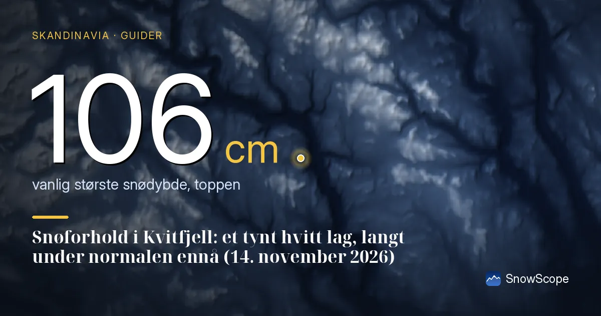

Snøforhold i Kvitfjell: et tynt hvitt lag, langt under normalen ennå (14. november 2026)
Kvitfjell ligger høyt i Gudbrandsdalen, og stiger 854 m fra fot til topp. 14. november viser snøkartet et tynt teppe: omkring 5 cm nær toppen ved 1 038 m og knapt 3 cm nede ved 184 m. Dette er langt under gjennomsnittet for midten av november. De nærmeste fjellværstasjonene forteller det samme: Venabu ved 930 m registrerte 5 cm 13. november, mens Skabu i samme høyde hadde 14 cm.
Se snøprognosen for Kvitfjell direkte i SnowScope-appenSnødybde, puddervarsler og 3D-kartet, gratis.

Hvor mye snø falt denne uken
De siste sju dagene brakte langsom snøfall over fjellet. Ved toppen kom omkring 3,5 cm, midtpartiet mottok omtrent 2,9 cm og foten bare 1,4 cm. Dette jevne snøfallet er typisk for tidlig sesong når snøen kommer i korte utbrudd i stedet for et kraftig snøfall.
Det tynne laget forteller en historie som er vanlig i midten av november: nok snø til å myke landskapet når man ser det fra avstand, men ikke nok til å dekke terrenget. Steiner, lyng og dødgras ligger nær overflaten på uspartelerede bakker.

Hva øvre fjell får
Værmeldingen for de neste sju dagene viser at toppen og øvre halvdel av fjellet drar forbi. SnowScope anslår omkring 9,8 cm på toppen og 8,9 cm på midtpunktet ved 611 m. Andre kilder antyder et bredere spekter, opp til 10 cm på toppen, så dette er det konservative anslaget.
Foten derimot, er fortsatt i trøbbel. Den samme uken forventes det lite snøfall nede ved foten, og nullgradersgrensen ligger omkring 290 til 480 m. Regn vil dominere ved dalbotnene, og holder området våt gjennom uken som kommer.
Hvordan dette sammenligner seg med en typisk sen høst
Rekordet fra 46 vintrer viser hva 14. november skulle gi: 27 cm på toppen, 20 cm på midtfjellet og 17 cm ved basen. Dagens tall er under snitt på alle tre høydelag. Tynne starter er imidlertid ikke uvanlige; i én vinter av ti har toppen bare 6 cm på denne datoen.
Den vanlige kalenderen viser at første varig snø ankommer toppen i tidlig oktober og blir liggende til sent mai. Ved slutten av november har toppen typisk 44 cm, og ved midten av desember når den 54 cm. Den dypeste snøen kommer i sent mars, når toppen i gjennomsnitt har 93 cm.
Det vertikale skillet på fjellet
Kvitfjells bratte 854 m profil betyr at forholdene kan variere kraftig mellom topp og bunn. Akkurat nå er gapet mindre enn vanlig for midten av november, med bare 2 cm som skiller basen fra toppen på snøkartet. Ved månedsskiftet drar vanligvis øvre og nedre halvdel fra hverandre ettersom kulden stabiliserer seg i høyden.
Skistøere som beveger seg over 600 m finner mer jevn dekning i løpet av uken som kommer, mens alle som er lavere må fortsatt navigere tynt snø over variabelt terreng.
Når sesongen begynner
Kvitfjell planlegger åpning 27. november, tretten dager fram i tid. Denne datoen avhenger av mer snøfall og kalde netter for å bygge en solid base, særlig på de nedre bakkene hvor regn fortsatt er den dominerende nedbørsformen.
Skistedets egen snørappport vil følge utviklingen etter hvert som åpningen nærmer seg. Vinterdekkreglementene er allerede i kraft for veier i dalen, ettersom forholdene endrer seg raskt uke for uke.
Tips til skiløpere
- Hold deg på preparerte bakker inntil minst 15 cm ligger på bakken. Steiner og lyng ligger nær overflaten nå, og skisting på tynt snø risikerer skader.
- Øvre fjell (over 600 m) blir mer pålitelig utover uken enn foten. Planlegg stigning på høyere eleviasjoner hvis du drar ut tidlig.
- Vinterdekk er påkrevd for Gudbrandsdalen-veier denne uken, med våte forhold i lav høyde og isete flekker høyere oppe.
- Sjekk Kvitfjells grooming og heistatus før du reiser; åpningsdatoer og driftsom råder skifter raskt i november.
- For skisting utenfor preparerte bakker, sjekk det offisielle snøskredvarselet fra Varsom (NVE) før du går.
Om tallene
Snødybdene for skistedene er det dypeste snødekket i de øvre bakkene på datoen som vises; de er anslag for et område, ikke en måling i ett punkt. Prognoser kan endre seg. Les alltid det offisielle snøskredvarselet før du kjører utenfor preparert løype.
Offisielle snøskredvarsler: Varsom (NVE)
Siter denne rapporten
For forskning, undervisning eller presse: tallene og diagrammene kan brukes fritt under CC BY 4.0 med denne kildehenvisningen.
SnowScope (2026), Snøforhold i Kvitfjell: et tynt hvitt lag, langt under normalen ennå (14. november 2026), https://snowscope.app/blog/nb/2026/11/kvitfjell-snow-conditions-14-november-2026.html, hentet 2026-11-14
SnowScope (Atlas Labs). (2026, November 14). Snøforhold i Kvitfjell: et tynt hvitt lag, langt under normalen ennå (14. november 2026). SnowScope snow reports. https://snowscope.app/blog/nb/2026/11/kvitfjell-snow-conditions-14-november-2026.html
BibTeX
@misc{snowscope2026kvitfjellsnowconditions1,
author = {{SnowScope (Atlas Labs)}},
title = {Snøforhold i Kvitfjell: et tynt hvitt lag, langt under normalen ennå (14. november 2026)},
year = {2026},
month = nov,
howpublished = {\url{https://snowscope.app/blog/nb/2026/11/kvitfjell-snow-conditions-14-november-2026.html}},
note = {Published 2026-11-14 13:09 UTC; accessed 2026-11-14}
}· CC BY 4.0 · Metoder, data og verktøy →
Kvitfjell: snø og temperatur etter høyde, i vinter sammenlignet med i fjor (verktøy) →
Følg Kvitfjell
Gratis: en melding når nysnø er på vei, og prognosen hver morgen.